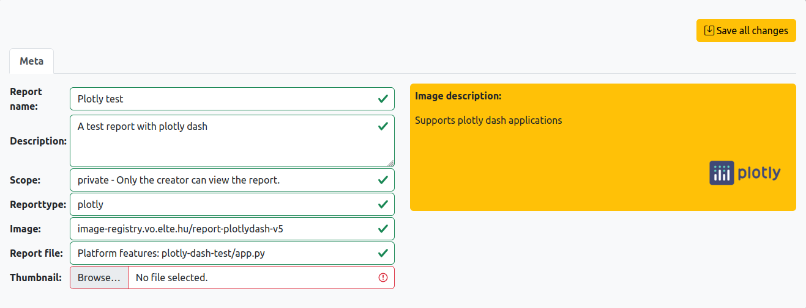
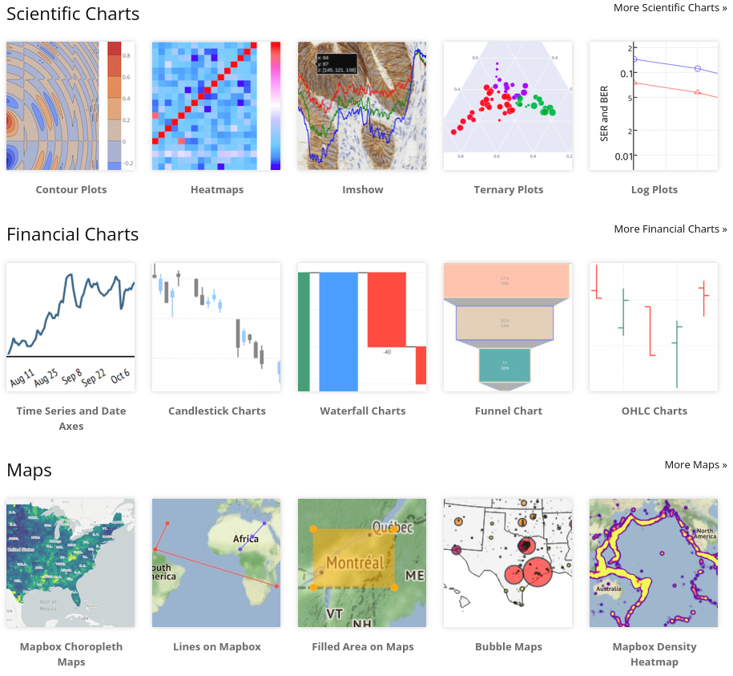
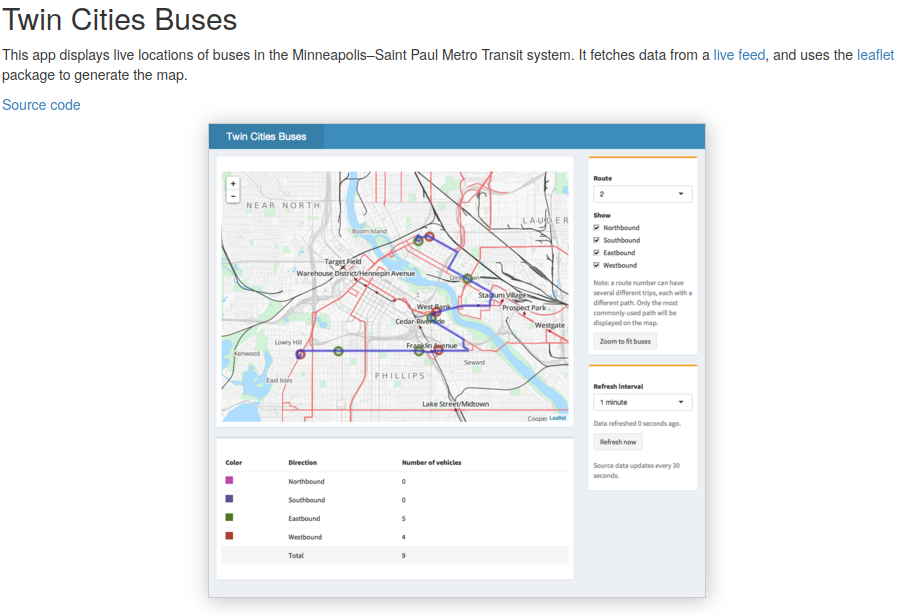

Prepare your reports¶
From local files¶
A report or application usually consist of several files and folders in order to contain
- the necessary code for creating it
- the data that needs to be visualized
- and the environment, necessary packages on which the code depends
- an executable startup file 'start.sh' that contains the command to run the code
Place these files into separate folders: report_prepare/<project_name>. The New Report form will pick up these folders.


From repositories¶
It is also possible to upload a token for a version control system (e.g. github, gitea) and then repositories can be selected from the given accounts.
Quickstart for creating a report:¶

Report types¶
- Static: anything that is converted into html can be served as a static html or
- Interactive html: a server is running in the backend, which processes commands coming from the user interface and therefore it can access all kind of resources to dynamically change figures in the report
An url is provided for each report at which it can be visited in the browser. In case of APIs the same url van be used for access.
Plotly dash¶
Here is an example code
The important steps are to use the proper environmental variables when creating the Dash instance and the server object
REPORT_URL = os.getenv("REPORT_URL")
app = Dash(__name__, url_base_pathname="/"+REPORT_URL)
REPORT_PORT = os.getenv("REPORT_PORT")
HOSTNAME = os.getenv("HOSTNAME")
app.run_server(debug=False, port=REPORT_PORT, host=HOSTNAME)
Example plotly plots and dashboards:

R shiny dashboards¶
The server will look for an app.R or ui.R.
Here are some shiny examples and a tutorial. Example shiny dashboard:

Bokeh server¶
The image runs automatically the following command:
/opt/conda/bin/bokeh serve $REPORT_FOLDER --prefix ${REPORT_URL} --allow-websocket-origin k8plex-test.vo.elte.hu --port $REPORT_PORT
It will look for a main.py or main.ipynb file
Images for reports¶
For extra python packages a requirements.txt needs to be placed in the report's folder.
Upon request a more customized image can be built with the necessary system packages.
Applications and REST services¶
Application can be served adn APIs as well.